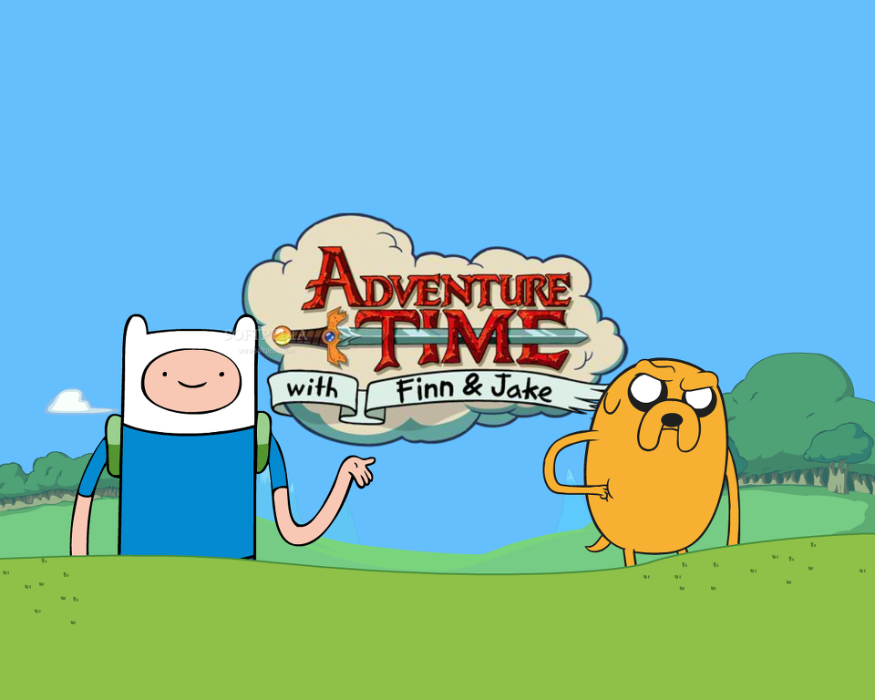

핀과 제이크의 어드벤처 타임 (Adventure Time)

등장인물 목록
핀 머튼스
"핀은 버섯전쟁 이후 우랜드의 유일한 인간이다"
제이크
"종족은 마법개이다,제이크의 부모님이 핀을 입양하여 핀과는 우애가 매우 깊다"
아이스킹
"우랜드의 얼음나라를 다스리는 왕, 핀과 제이크와는 숙적이다"
버블검
"우랜드의 캔디왕국을 다스리고 있는 공주, 과학에 뛰어나다"
마르셀린
"뱀파이어 여왕이지만 아버지를 이어 통치하기를 거부한다"
"판타지 세계인 우 랜드에서 일어나는 공주, 마법사, 돌연변이 그리고 인간 핀의 이야기!"
간단한 줄거리 - 버섯전쟁 이후로 핀을 제외한 모든 인간이 사라지고 돌연변이들이 생겨났다.
돌연변이 개인 제이크와 핀은 주인없는
나무집에서 살고있다.
핀은 우랜드의 영웅이라 모든 정의로운 일에 가담하고 제이크는 핀을 도우며 생기는 일을 다뤘다!
추천하는 방영 에피소드!
- "I Remember You" <널 기억 못할 때>
- "The Vault" <쇼코 이야기>
- "Blade Of Grass" <풀의 검>
돌아오기